Data Science from Scratch (ch6) - Probability
Conditional Probability & Bayes Theorem
Table of contents
- Challenge
- Marginal and Joint Probability
- Conditional Probability
- Bayes’ Theorem
- Applying Bayes’ Theorem
- Distributions
Overview
Challenge
The first challenge in this section is distinguishing between two conditional probability statements.
Here’s the setup. We have a family with two (unknown) children with two assumptions. First, each child is equally likely to be a boy or a girl. Second, the gender of the second child is independent of the gender of the first child.
Outcome 1: What is the probability of the event “both children are girls” (B) conditional on the event “the older child is a girl” (G)?
The probability for statement one is roughly 50% or (1/2).
Outcome 2: What is the probability of the event “both children are girls” (B) conditional on the event “at least one of the children is a girl” (L)?
The probability for statement two is roughly 33% or (1/3).
But at first glance, they look similar.
Marginal_and_Joint_Probabilities
The book jumps straight to conditional probabilities, but first, we’ll have to look at marginal and joint probabilities. Then we’ll create a joint probabilities table and sum probabilities to help us figure out the differences. We’ll then resume with conditional probabilities.
Before anything, we need to realize the situation we have is one of independence. The gender of one child is independent of a second child.
The intuition for this scenario will be different from a dependent situation. For example, if we draw two cards from a deck (without replacement), the probabilities are different. The probability of drawing one King ♠️ is (4/52) and the probability of drawing a second King ♣️ is now (3/51); the probability of the second event (a second King) is dependent on the result of the first draw.
Ok back to the two unknown children.
We can say the probability of the first child being either a boy or a girl is 50/50. Moreover, the probability of the second child, which is independent of the first, is also 50/50. Remember, our first assumption is that each child is equally likely to be a boy or a girl.
Let’s put these numbers in a table. The (1/2) probabilities shown here are called marginal probabilities (note how they’re at the margins of the table).
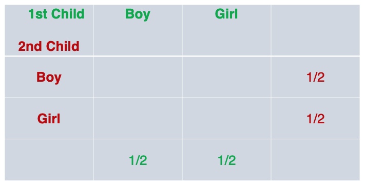
Since we have two gender (much like two sides of a flipped coin), we can intuitively figure out all possible outcomes:
- first child (Boy), second child (Boy)
- first child (Boy), second child (Girl)
- first child (Girl), second child (Boy)
- first child (Girl), second child (Girl)
There are 4 possible outcomes so the probability of getting any one of the four outcomes is (1/4). We can actually write these probabilities in the middle of the table, the joint probabilities:
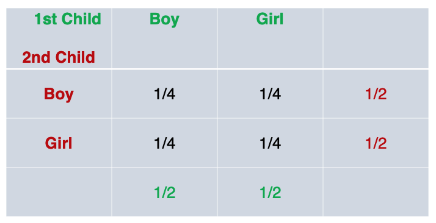
To recap, the probability of the first child being either boy or girl is 50/50, simple enough. The probability of the second child being either boy or girl is also 50/50. When put in a table, this yielded the marginal probability.
Now we want to know the probability of say, ‘first child being a boy and second child being a girl’. This is a joint probability because is is the probability that the first child take a specific gender (boy) AND the second child take a specific gender (girl).
If two event are independent, and in this case they are, their joint probabilities are the product of the probabilities of each one happening.
The probability of the first child being a Boy (1/2) and second child being a Girl (1/2); The product of each marginal probability is the joint probability (1/2 * 1/2 = 1/4).
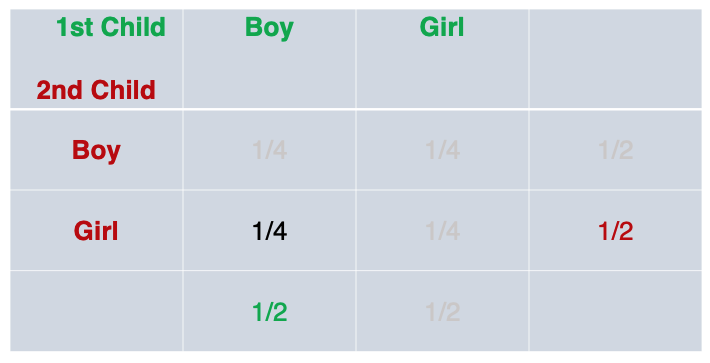
This can be repeated for the other three joint probabilities.
Conditional_Probability
Now we get into conditional probability which is the probability of one event happening (i.e., second child being a Boy or Girl) given that or on conditional that another event happened (i.e., first child being a Boy).
At this point, it might be a good idea to get familiar with notation.
A joint probability is the product of each individual event happening (assuming they are independent events). For example we might have two individual events:
- P(1st Child = Boy): 1/2
- P(2nd Child = Boy): 1/2
Here is their joint probability:
- P(1st Child = Boy, 2nd Child = Boy) =>
- P(1st Child = Boy) * P(2nd Child = Boy) =>
- (1/2 * 1/2 = 1/4)
There is a relationship between conditional probabilities and joint probabilities.
- P(1st Child = Boy | 2nd Child = Boy) = P(1st Child = Boy, 2nd Child = Boy) / P(2nd Child = Boy)
Namely, the conditional probability is equal to the joint probability divided by the conditional.
Thie works out to:
- P(1st Child = Boy | 2nd Child = Boy) = (1/4) / (1/2) or
- (1/4) * (2/1) = 1/2
In other words, the probability that the second child is a boy, given that the first child is a boy is still 50% (this implies that with respect to conditional probability, if the events are independent it is not different from a single event).
Now we’re ready to tackle the two challenges posed at the beginning of this post.
Challenge 1: What is the probability of the event “both children are girls” (B) conditional on the event “the older child is a girl” (G)?
Let’s break it down. First we want the probability of the event that “both children are girls”. We’ll take the product of two events; the probability that the first child is a girl (1/2) and the probability that the second child is a girl (1/2). So the joint probability of both child being girls is 1/2 * 1/2 = 1/4
- P(1st Child = Girl, 2nd Child = Girl) = 1/4
Second, we want that to be given that the “older child is a girl”.
- P(1st Child = Girl) = 1/2
Conditional probability:
-
P(Both Child = Girls | 1st Child = Girl) = P(1st Child = Girl, 2nd Child = Girl) / P(1st Child = Girl)
-
P(Both Child = Girls | 1st Child = Girl) = (1/4) / (1/2)
-
(1/4) * (2/1) = 1/2 or roughly 50%
Now let’s break down the second challenge:
Challenge 2: What is the probability of the event “both children are girls” (B) conditional on the event “at least one of the children is a girl” (L)?
Again, we start with “both children are girls”:
- P(1st Child = Girl, 2nd Child = Girl) = 1/4
Then, we have “on condition that at least one of the children is a girl”. We’ll reference a joint probability table. We see that when trying to figure out the probability that “at least one of the children is a girl”, we rule out the scenario where both children are boys. The remaining 3 out of 4 probabilities, fit the condition.
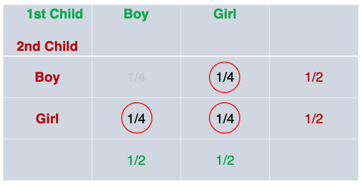
The probability of at least one children being a girl is:
- (1/4) + (1/4) + (1/4) = 3/4
So (introducing notation):
-
P(B) = “probability of both child being girls” (i.e., 1st Child = Girl, 2nd Child = Girl)
-
P(L) = “probability of at least one child being a girl”
-
P(B|L) = P(B,L) / P(L)
-
P(B|L) = (1/4) / (3/4) = (1/4) * (4/3) = 1/3 or roughly 33%
Key Take-away
When two events are independent, their joint probability is the product of each event:
- P(E,F) = P(E) * P(F)
Their conditional probability is the joint probability divided by the conditional (i.e., P(F)).
- P(E|F) = P(E,F) / P(F)
And so for our two challenge scenarios, we have:
Challenge 1:
- B = probability that both children are girls
- G = probability that the older children is a girl
This can be stated as: P(B|G) = P(B,G) / P(G)
Challenge 2:
- B = probability that both children are girls
- L = probability that at least one children is a girl
This can be stated as: P(B|L) = P(B,L) / P(L)
Python Code
Now that we have an intuition and have worked out the problem on paper, we can use code to express conditional probability:
import enum, random
class Kid(enum.Enum):
BOY = 0
GIRL = 1
def random_kid() -> Kid:
return random.choice([Kid.BOY, Kid.GIRL])
both_girls = 0
older_girl = 0
either_girl = 0
random.seed(0)
for _ in range(10000):
younger = random_kid()
older = random_kid()
if older == Kid.GIRL:
older_girl += 1
if older == Kid.GIRL and younger == Kid.GIRL:
both_girls += 1
if older == Kid.GIRL or younger == Kid.GIRL:
either_girl += 1
print("P(both | older):", both_girls / older_girl) # 0.5007089325501317
print("P(both | either):", both_girls / either_girl) # 0.3311897106109325
We can see that code confirms our intuition.
We use a for-loop and range(10000) to randomly simulate 10,000 scenarios. The random_kid function randomly picks either a boy or girl (assumption #1). We set the following variables to start a 0, both_girls (both children are girls); older_girl (first child is a girl); and either_girl (at least one child is a girl).
Then, each of these variables are incremented by 1 through each of the 10,000 loops if it meets certain conditions. After we finish looping, we can call on each of the three variables to see if they match our calculations above:
either_girl #7,464 / 10,000 ~ roughly 75% or 3/4 probability that there is at least one girl
both_girls #2,472 / 10,000 ~ roughly 25% or 1/4 probability that both children are girls
older_girl #4,937 / 10,000 ~ roughly 50% or 1/2 probability that the first child is a girl
We will look at Bayes Theorem next.
Bayes_Theorem
Previously, we established an understanding of conditional probability, but building up with marginal and joint probabilities. We explored the conditional probabilities of two outcomes:
Outcome 1: What is the probability of the event “both children are girls” (B) conditional on the event “the older child is a girl” (G)?
The probability for outcome one is roughly 50% or (1/2).
Outcome 2: What is the probability of the event “both children are girls” (B) conditional on the event “at least one of the children is a girl” (L)?
The probability for outcome two is roughly 33% or (1/3).
Bayes’ Theorem is simply an alternate way of calculating conditional probability.
Previously, we used the joint probability to calculate the conditional probability.
Outcome 1
Here’s the conditional probability for outcome 1, using a joint probability:
-
P(G) = ‘Probability that first child is a girl’ (1/2)
-
P(B) = ‘Probability that both children are girls’ (1/4)
-
P(B|G) = P(B,G) / P(G)
-
P(B|G) = (1/4) / (1/2) = 1/2 or roughly 50%
Technically, we can’t use joint probability because the two events are not independent.
To clarify, the probability of the older child being a certain gender and the probability of the younger child being a certain gender is independent, but P(B|G) the ‘probability of both child being a girl’ and ‘the probability of the older child being a girl’ are not independent; and hence we express it as a conditional probability.
So, the joint probability of P(B,G) is just event B,P(B).
Here’s an alternate way to calculate the conditional probability (without joint probability):
P(B|G) = P(G|B) * P(B) / P(G)This is Bayes Theorem- P(B|G) = 1 * (1/4) / (1/2)
- P(B|G) = (1/4) * (2/1)
- P(B|G) = 1/2 = 50%
note: P(G|B) is ‘the probability that the first child is a girl, given that both children are girls is a certainty (1.0)’
The reverse conditional probability, can also be calculated, without joint probability:
What is the probability of the older child being a girl, given that both children are girls?
P(G|B) = P(B|G) * P(G) / P(B)This is Bayes Theorem (reverse case)- P(G|B) = (1/2) * (1/2) / (1/4)
- P(G|B) = (1/4) / (1/4)
- P(G|B) = 1 = 100%
This is consistent with what we already derived above, namely that P(G|B) is a certainty (probability = 1.0), that the older child is a girl, given that both children are girls.
We can point out two additional observations / rules:
- While, joint probabilities are symmetrical: P(B,G) == P(G,B),
- Conditional probabilities are not symmetrical: P(B|G) != P(G|B)
Bayes’ Theorem: Alternative Expression
Bayes Theorem is a way of calculating conditional probability without the joint probability, summarized here:
P(B|G) = P(G|B) * P(B) / P(G)This is Bayes TheoremP(G|B) = P(B|G) * P(G) / P(B)This is Bayes Theorem (reverse case)
You’ll note that P(G) is the denominator in the former, and P(B) is the denominator in the latter.
What if, for some reasons, we don’t have access to the denominator?
We could derive both P(G) and P(B) in another way using the NOT operator:
- P(G) = P(G,B) + P(G,not B) = P(G|B) * P(B) + P(G|not B) * P(not B)
- P(B) = P(B,G) + P(B,not G) = P(B|G) * P(G) + P(B|not G) * P(not G)
Therefore, the alternative expression of Bayes Theorem for the probability of both children being girls, given that the first child is a girl ( P(B|G) ) is:
- P(B|G) = P(G|B) * P(B) / ( P(G|B) * P(B) + P(G|not B) * P(not B) )
- P(B|G) = 1 * 1/4 / (1 * 1/4 + 1/3 * 3/4)
- P(B|G) = 1/4 / (1/4 + 3/12)
- P(B|G) = 1/4 / 2/4 = 1/4 * 4/2
- P(B|G) = 1/2 or roughly 50%
We can check the result in code:
def bayes_theorem(p_b, p_g_given_b, p_g_given_not_b):
# calculate P(not B)
not_b = 1 - p_b
# calculate P(G)
p_g = p_g_given_b * p_b + p_g_given_not_b * not_b
# calculate P(B|G)
p_b_given_g = (p_g_given_b * p_b) / p_g
return p_b_given_g
#P(B)
p_b = 1/4
# P(G|B)
p_g_given_b = 1
# P(G|notB)
p_g_given_not_b = 1/3
# calculate P(B|G)
result = bayes_theorem(p_b, p_g_given_b, p_g_given_not_b)
# print result
print('P(B|G) = %.2f%%' % (result * 100))
For the probability that the first child is a girl, given that both children are girls ( P(G|B) ) is:
- P(G|B) = P(B|G) * P(G) / ( P(G|B) * P(G) + P(B|not G) * P(not G) )
- P(G|B) = 1/2 * 1/2 / ((1/2 * 1/2) + (0 * 1/2))
- P(G|B) = 1/4 / 1/4
- P(G|B) = 1
Let’s unpack Outcome 2.
Outcome 2
Outcome 2: What is the probability of the event “both children are girls” (B) conditional on the event “at least one of the children is a girl” (L)?
The probability for outcome two is roughly 33% or (1/3).
We’ll go through the same process as above.
We could use joint probability to calculate the conditional probability. As with the previous outcome, the joint probability of P(B,G) is just event B,P(B).
- P(B|L) = P(B,L) / P(L) = 1/3
Or, we could use Bayes’ Theorem to figure out the conditional probability without joint probability:
- P(B|L) = P(L|B) * P(B) / P(L)
- P(B|L) = (1 * 1/4) / (3/4)
- P(B|L) = 1/3
And, if there’s no P(L), we can calculate that indirectly, also using Bayes’ Theorem:
- P(L) = P(L|B) * P(B) + P(L|not B) * P(not B)
- P(L) = 1 * (1/4) + (2/3) * (3/4)
- P(L) = (1/4) + (2/4)
- P(L) = 3/4
Then, we can use P(L) in the way Bayes’ Theorem is commonly expressed, when we don’t have the denominator:
- P(B|L) = P(L|B) * P(B) / ( P(L|B) * P(B) + P(L|not B) * P(not B) )
- P(B|L) = 1 * (1/4) / (3/4)
- P(B|L) = 1/3
Now that we’ve gone through the calculation for two conditional probabilities, P(B|G) and P(B|L), using Bayes Theorem, and implemented code for one of the scenarios, let’s take a step back and assess what this means.
Bayesian Terminology
I think its useful to understand that probability in general shines when we want to describe uncertainty and that Bayes’ Theorem allows us to quantify how much the data we observe, should change our beliefs.
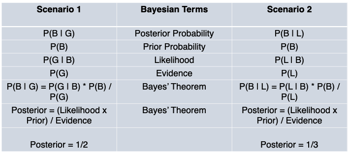
We have two posteriors, P(B|G) and P(B|L), both with equal priors and likelihood, but with different evidence.
Said differently, we want to know the ‘probability that both children are girls`, given different conditions.
In the first case, our condition is ‘the first child is a girl’ and in the second case, our condition is ‘at least one of the child is a girl’. The question is which condition will increase the probability that both children are girls?
Bayes’ Theorem allows us to update our belief about the probability in these two cases, as we incorporate varied data into our framework.
What the calculations tell us is that the evidence that ‘one child is a girl’ increases the probability that both children are girls more than the other piece of evidence that ‘at least one child is a girl’ increases that probability.
And our beliefs should be updated accordingly.
At the end of the day, understanding conditional probability (and Bayes Theorem) comes down to counting. For our hypothetical scenarios, we only need one hand:
When we look at the probability table for outcome one, P(B|G), we can see how the posterior probability comes out to 1/2:
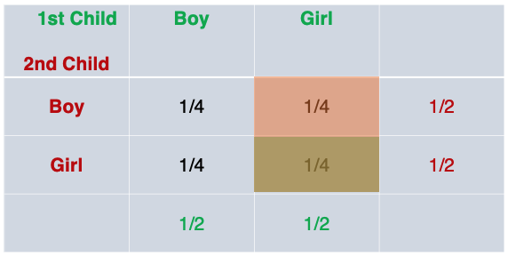
When we look at the probability table for outcome two, P(B|L), we can see how the posterior probability comes out to 1/3:
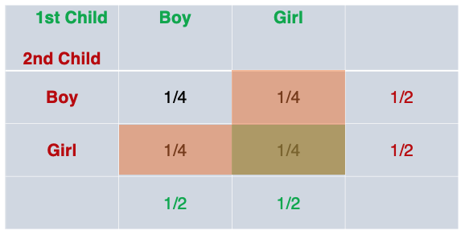
This is part of an ongoing series documenting my progress through Data Science from Scratch by Joel Grus:
Applying_Bayes_Theorem
Now that we have a basic understanding of Bayes Theorem, let’s extend the application to a slightly more complex example. This section was inspired by this tweet from Grant Sanderson (of 3Blue1Brown fame):
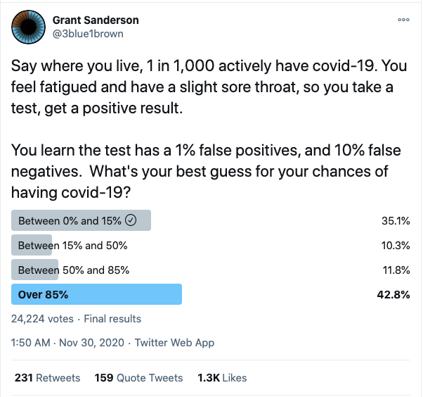
This is a classic application of Bayes Theorem - the medical diagnostic scenario. The above tweet can be re-stated:
What is the probability of you actually having the disease, given that you tested positive?
This happens to be even more relevant as we’re living through a generational pandemic.
Let’s start off with a conceptual understanding, using the tools we learned previously. First, we have to keep in mind testing and actually having the disease are not independent events. Therefore, we will use conditional probability to express their joint outcomes.
The intuitive visual to illustrate this is the tree diagram:
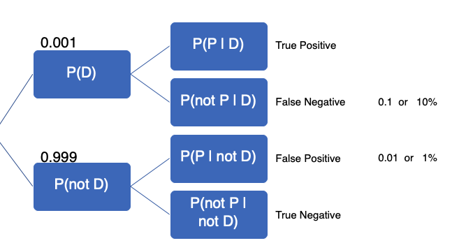
The initial given information contains the information in the tree.
-
P(D): Probability of having the disease (covid-19)
-
P(P): Probability of testing positive
-
*P(D|P): Our objective is to find the probability of having the disease, given a positive test
-
1 in 1,000 actively have covid-19, P(D), this implies…
-
999 in 1,000 do not actively have covid-19, P(not D)
-
1% or 0.01 false positive (given)
-
10% or 0.1 false negative (given)
The false positive is when you don’t have the disease, but your test (in error) shows up positive. False negative is when you have the disease, but your test (in error) shows up negative. We are provided this information and have to calculate other values to fill in the tree.
We know that all possible events have to add up to 1, so if 1 in 1,000 actively have the disease, we know that 999 in 1,000 do not have it. If the false negative is 10%, then the true positive is 90%. If the false positive is 1%, then the true negative is 99%. From our calculations, the tree can be updated:
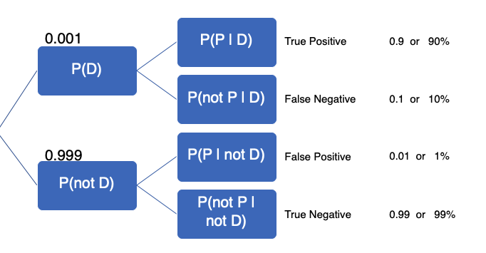
Now that we’ve filled out the tree, we can use Bayes’ Theorem to find P(D|P). Here’s Bayes’ Theorem that we discussed in the previous section. We have Bayes’ Theorem, the denominator, probability of testing positive P(P) and the second version of Bayes Theorem in cases were we do not know the probability of testing positive (as in the present case):
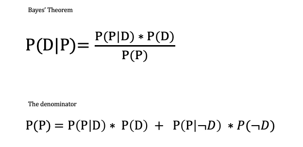
Then we can plug-in the denominator to get the alternative version of Bayes’ Theorem:
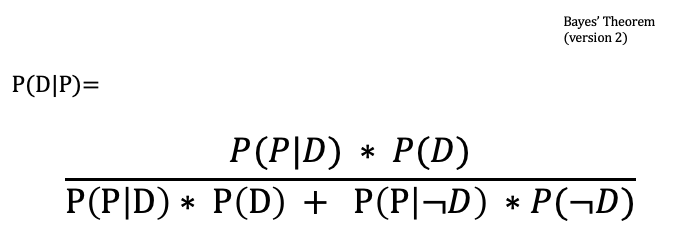
Here’s how the numbers add up:
- P(D|P) = P(P|D) * P(D) / P(P|D) * P(D) + P(P|not D) * P(not D)
- P(D|P) = 0.9 * 0.001 / 0.9 * 0.001 + 0.01 * 0.999
- P(D|P) = 0.0009 / 0.0009 + 0.00999
- P(D|P) = 0.0009 / 0.01089
- P(D|P) ~ 0.08264 or 8.26%
Interestingly, Andrej Karpathy actually responded in the thread and provided an intuitive way to arrive at the same result using Python.
Here’s his code (with added comments):
from random import random, seed
seed(0)
pop = 10000000 # 10M people
counts = {}
for i in range(pop):
has_covid = i % 1000 == 0 # one in 1,000 people have covid (priors or prevalence of disease)
# The major assumption is that every person gets tested regardless of any symptoms
if has_covid: # Has disease
tests_positive = True # True positive
if random() < 0.1:
tests_positive = False # False negative
else: # Does not have disease
tests_positive = False # True negative
if random() < 0.01:
tests_positive = True # False positive
outcome = (has_covid, tests_positive)
counts[outcome] = counts.get(outcome, 0) + 1
for (has_covid, tested_positive), n in counts.items():
print('has covid: %6s, tests positive: %6s, count: %d' % (has_covid, tested_positive, n))
n_positive = counts[(True, True)] + counts[(False, True)]
print('number of people who tested positive:', n_positive)
print('probability that a test-positive person actually has covid: %.2f' % (100.0 * counts[(True, True)] / n_positive), )
We first build a hypothetical population of 10 million. If the prior or prevalence of disease is 1 in 1,000, a population of 10 million should find 10000 people with covid. You can see how this works with this short snippet:
pop = 10000000
counts = 0
for i in range(pop):
has_covid = i % 1000 == 0
if has_covid:
counts = counts + 1
print(counts, "people have the disease in a population of 10 million")
Nested in the for-loop are if-statements that segment the population (10M) into one of four categories True Positive, False Negative, True Negative, False Positive. Each category is counted and stored in a dict called counts. Then another for-loop is used to loop through this dictionary to print out all the categories:
has covid: True, tests positive: True, count: 9033
has covid: False, tests positive: False, count: 9890133
has covid: False, tests positive: True, count: 99867
has covid: True, tests positive: False, count: 967
number of people who tested positive: 108900
probability that a test-positive person actually has covid: 8.29
Finally, we want the number of people who have the disease and tested positive (True Positive, 9033) divided by the number of people who tested positive, regardless of whether they actually have the disease (True Positive (9033) + False Positive (99867) = 108,900) and this comes out to approximately 8.29.
Although the code was billed as “simple code to build intuition”, I found that Bayes’ Theorem is the intuition.
What about symptoms?
The key to Bayes’ Theorem is that it encourages us to update our beliefs when presented with new evidence. But what if there’s evidence we missed in the first place?
If you look back at the original tweet, there are important details about symptoms that, if we wanted to be more realistic, should be accounted for.
You feel fatigued and have a slight sore throat.
Here, instead of assuming that prevalence of the disease (1 in 1,000 people have covid-19) is the prior, we might ask what probability that someone who is symptomatic has the disease?
Let’s suppose we change from 1 in 1,000 to 1 in 100. We could change just one line of code (while everything else remains the same):
for i in range(pop):
has_covid = i % 100 == 0 # update info: 1/1000 have covid, but 1/100 with symptoms have covid
The probability that someone with a positive test actually has the disease jumps from 8.29% to 47.61%
has covid: True, tests positive: True, count: 180224
has covid: False, tests positive: False, count: 19601715
has covid: False, tests positive: True, count: 198285
has covid: True, tests positive: False, count: 19776
number of people who tested positive: 378509
probability that a test-positive person with symptoms actually has covid: 47.61
Thus, being symptomatic means our priors should be adjusted and our beliefs about the likelihood that a positive test means we have the disease (P(D|P)) should be updated accordingly (in this case, it goes way up).
Take Aways
Hypothetically, if we have family or friends living in an area where 1 in 1,000 people have covid-19 and they (god forbid) got tested and got a positive result, you could tell them that their probability of actually having the disease, given a positive test was around 8.26–8.29%.
However, what’s useful about the Bayesian approach is that it encourages us to incorporate new information and update our beliefs accordingly. So if we find out our family or friend is also symptomatic, we could advise them of the higher probability (~47.61%).
Finally, we may also advise our family/friends to get tested again, because as much as test-positive person would hope they got a ‘false positive’, chances are low. And even lower, is getting a false positive twice.
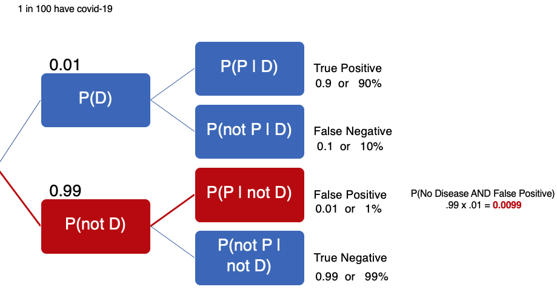
Distributions
In this post, we’ll cover various distributions. This is a broad topic so we’ll sample a few concepts to get a feel for it. Borrowing from the previous post, we’ll chart our medical diagnostic outcomes.
You’ll recall that each outcome is the combination of whether someone has a disease, P(D), or not, P(not D). Then, they’re given a diagnostic test that returns positive, P(P) or negative, P(not P).
These are discrete outcomes so they can be represented with the probability mass function, as opposed to a probability density function, which represent a continuous distribution.
Let’s take another hypothetical scenario of a city where 1 in 10 people have a disease and a diagnostic test has a True Positive of 95% and True Negative of 90%. The probability that a test-positive person actually having the disease is 46.50%.
Here’s the code:
from random import random, seed
seed(0)
pop = 1000 # 1000 people
counts = {}
for i in range(pop):
has_disease = i % 10 == 0 # one in 10 people have disease
# assuming that every person gets tested regardless of any symptoms
if has_disease:
tests_positive = True # True Positive 95%
if random() < 0.05:
tests_positive = False # False Negative 5%
else:
tests_positive = False # True Negative 90%
if random() < 0.1:
tests_positive = True # False Positive 10%
outcome = (has_disease, tests_positive)
counts[outcome] = counts.get(outcome, 0) + 1
for (has_disease, tested_positive), n in counts.items():
print('Has Disease: %6s, Test Positive: %6s, count: %d' %
(has_disease, tested_positive, n))
n_positive = counts[(True, True)] + counts[(False, True)]
print('Number of people who tested positive:', n_positive)
print('Probability that a test-positive person actually has disease: %.2f' %
(100.0 * counts[(True, True)] / n_positive),)
Given the probability that someone has the disease (1 in 10), also called the ‘prior’ in Bayesian terms. We modeled four scenarios where people were given a diagnostic test. Again, the big assumption here is that people get randomly tested. With the true positive and true negative rates stated above, here are the outcomes:
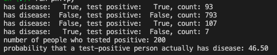
Probability Mass Function
Given these discrete events, we can chart a probability mass function, also known as
discrete density function. We’ll import pandas to help us create DataFrames and matplotlib to chart the probability mass function.
We first need to turn the counts of events into a DataFrame and change the column to item_counts. Then, we’ll calculate the probability of each event by dividing the count by the total number of people in our hypothetical city (i.e., population: 1000).
Optional: Create another column with abbreviations for test outcome (i.e., “True True” becomes “TT”). We’ll call this column item2.
import pandas as pd
import matplotlib.pyplot as plt
df = pd.DataFrame.from_dict(counts, orient='index')
df = df.rename(columns={0: 'item_counts'})
df['probability'] = df['item_counts']/1000
df['item2'] = ['TT', 'FF', 'FT', 'TF']
Here is the DataFrame we have so far:
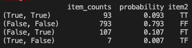
You’ll note that the numbers in the probability column adds up to 1.0 and that the item_counts numbers are the same as the count above when we had calculated the probability of a test-positive person actually having the disease.
We’ll use a simple bar chart to chart out the diagnostic probabilities and this is how we’d visually represent the probability mass function - probabilities of each discrete event; each ‘discrete event’ is a conditional (e.g., probability that someone has a positive test, given that they have the disease - TT or probability that someone has a negative test, given that they don’t have the disease - FF, and so on).
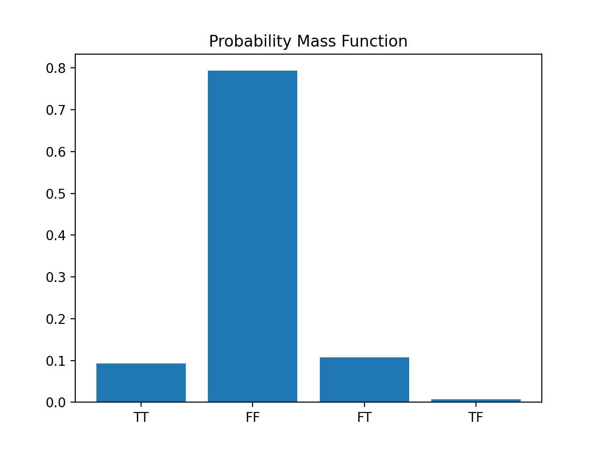
Here’s the code:
df = pd.DataFrame.from_dict(counts, orient='index')
df = df.rename(columns={0: 'item_counts'})
df['probability'] = df['item_counts']/1000
df['item2'] = ['TT', 'FF', 'FT', 'TF']
plt.bar(df['item2'], df['probability'])
plt.title("Probability Mass Function")
plt.show()
Cumulative Distribution Function
While the probability mass function can tell us the probability of each discrete event (i.e., TT, FF, FT, and TF) we can also represent the same information as a cumulative distribution function which allows us to see how the probability changes as we add events together.
The cumulative distribution function simply adds the probability from the previous row in a DataFrame in a cumulative fashion, like in the column probability2:
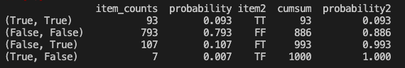
We use the cumsum() function to create the cumsum column which is simply adding the item_counts, with each successive row. When we create the corresponding probability column, probability2, it gets larger until we reach 1.0.
Here’s the chart:
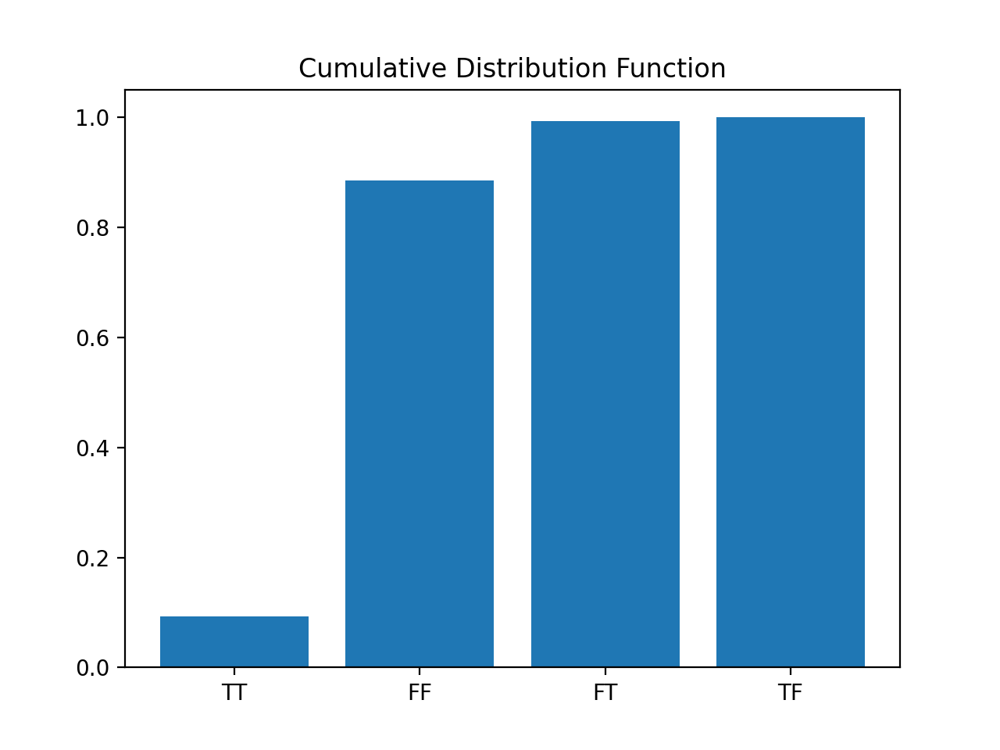
This chart tells us that the probability of getting both TT and FF (True, True = True Positive, and False, False = True Negative) is 88.6% which indicates that 11.4% (100 - 88.6) of the time, the diagnostic test will let us down.
Normal Distribution
More often than not, you’ll be interested in continuous distributions and you can see better see how the cumulative distribution function works.
You’re probably familiar with the bell shaped curve or the normal distribution, defined solely by its mean (mu) and standard deviation (sigma). If you have a standard normal distribution of probability values, the average would be 0 and the standard deviation would be 1.
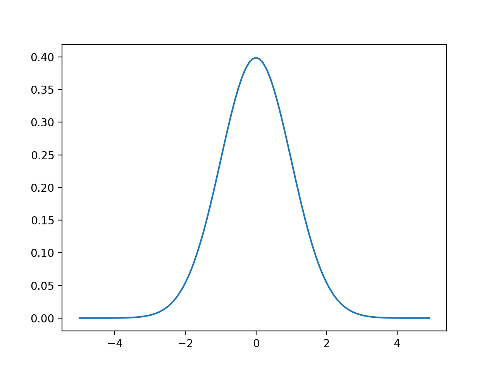
Code:
import math
SQRT_TWO_PI = math.sqrt(2 * math.pi)
def normal_pdf(x: float, mu: float = 0, sigma: float = 1) -> float:
return (math.exp(-(x-mu) ** 2 / 2 / sigma ** 2) / (SQRT_TWO_PI * sigma))
# plot
xs = [x / 10.0 for x in range(-50, 50)]
plt.plot(xs, [normal_pdf(x, sigma=1) for x in xs], '-', label='mu=0, sigma=1')
plt.show()
With the standard normal distribution curve, you see the average probability is around 0.4. But if you add up the area under the curve (i.e., all probabilities of every possible outcome), you would get 1.0, just like with the medical diagnostic example.
And if you split the bell in half, then flip over the left half, you’ll (visually) get the cumulative distribution function:
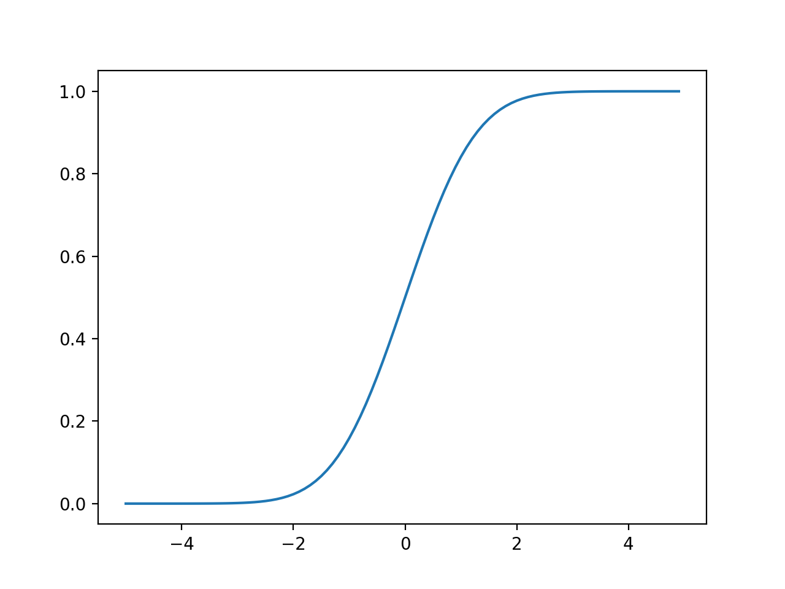
Code:
import math
def normal_cdf(x: float, mu: float = 0, sigma: float = 1) -> float:
return (1 + math.erf((x - mu) / math.sqrt(2) / sigma)) / 2
# plot
xs = [x / 10.0 for x in range(-50, 50)]
plt.plot(xs, [normal_cdf(x, sigma=1) for x in xs], '-', label='mu=0,sigma=1')
In both cases, the area under the curve for the standard normal distribution and the cumulative distribution function is 1.0, thus summing the probabilities of all events is one.
For more content on data science, machine learning, R, Python, SQL and more, find me on Twitter.